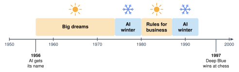
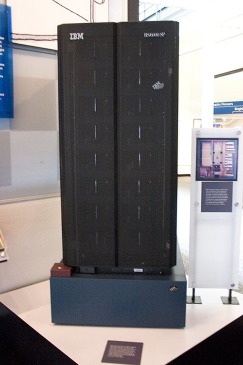

1.4 - Rules Win at Games
In 1958, a newspaper wrote about a new computer. It said the computer would soon “walk, talk, see, write, reproduce itself and be conscious of its existence.”
Did that happen? Not in 1958. Not for a long time.
For about 40 years, scientists tried to build AI out of rules. Rules didn’t work for seeing or talking. But rules did work for one thing: games. Today, you play a game against a bot made only of rules. Then you break it.
Today’s Plan (40 minutes)
- 🔥 Warm Up Did it come true? 7 min
- 👥 Learn Together Winters and chess 10 min
- 🛠️ Try It Beat the rule bot 15 min
- 💬 Talk About It Is it smart? 8 min
Printable lesson sheet - the sheet you write on today.
🔥 Warm Up
Long ago, people made big promises about AI. Read each one. Did it come true by the time they said? Mark your sheet.
| Year | Who said it | The promise | |
|---|---|---|---|
| A | 1958 | A newspaper | A new computer will soon walk, talk, see, write, make copies of itself, and know that it exists. |
| B | 1958 | Two scientists | Within 10 years, a computer will be the world chess champion. |
| C | 1970 | Marvin Minsky | In 3 to 8 years, we’ll have a machine as smart as an average person. |
None of them came true by the time they said.
Parts of Promise A came true much later. Today, AI can talk, see, and write. Can it know that it exists? Nobody knows.
Promise B came true later. A computer beat the world chess champion in 1997. That’s 39 years later, not 10.
Promise C didn’t come true by the 1970s. Today, some people say AI is getting close. Other people strongly disagree. You’ll think about this in Unit 6.
👥 Learn Together
1.4.1 - AI Winters
In 1956, scientists met at Dartmouth College. They gave the new field a name: artificial intelligence. They thought smart machines were only a few years away. Governments and companies gave them a lot of money.
Progress was much slower than the promises. So the money stopped. This happened two times.
People call these times AI winters. (In winter, plants stop growing. In an AI winter, AI research stopped growing.)

The promises in the Warm Up were hype. In 1958 and 1970, they were much bigger than what the machines could do. When the promises failed, the money stopped.
But the promises weren’t all wrong. Some were only too early.
Today is different. AI already does many things people once only dreamed about. It talks, writes, translates, and finds things in pictures. Millions of people use it every day. Many big promises today start from things AI can already do.
That doesn’t mean every promise will come true. When you hear one, ask: What can AI already do? Who checked it?
1.4.2 - Rules Can Win at Games
A game is a small world. It has clear rules. Every move is on the board. Rules can work well in a small world.
In May 1997, IBM’s computer Deep Blue played the world chess champion, Garry Kasparov. Deep Blue won, \(3\frac{1}{2}\) to \(2\frac{1}{2}\).

- People wrote Deep Blue’s rules for judging a chess position.
- Then it checked about 200 million positions every second.
- Deep Blue didn’t learn like the drawing AI in Lesson 1.1. It used rules and speed.
Deep Blue could beat the best chess player in the world. But its rules couldn’t tell a cat from a dog. Rules that work in a small world don’t work in the big, messy real world.
🛠️ Try It
1.4.3 - Beat the Rule Bot
This bot plays tic-tac-toe. It has 8 rules. It checks them in order and uses the first one it can.
- Play 3 games with all the rules on. Can you beat the bot?
- Turn off one rule. Play again. Can you beat it now?
- Try different rules. Find the rules the bot needs most. Write them on your sheet.
- Look at the orange box after each move. Which rule did the bot use?
No. With all 8 rules, the bot never loses. The best you can do is a tie.
Some rules matter more than others. Turn off Block and the bot doesn’t stop you from winning. Turn off Side and nothing changes.
No one knows. People tried for years and couldn’t write them. A cat can be any color, any size, in any position, in any light. There are too many cases.
That’s why AI changed. In the next lesson, you’ll see what happened when scientists stopped writing rules and started collecting examples.
💬 Talk About It
Deep Blue beat the best chess player in the world. Is Deep Blue smart?
- I think Deep Blue is / is not smart, because …
- The most important rule for the bot was … because …
- Rules work for games, but not for … , because …
- AI today is different from AI in 1970 because …
- One promise about AI today that I think (will / won’t) come true is … , because …
🚀 Go Further
Play tic-tac-toe on paper with a partner. One of you is the bot. The bot must follow the 8 rules on your sheet, in order. The bot can’t think! Can the human win? Switch jobs.
Write one promise about AI for 10 years from now. Use the form: “By 2036, AI will …” Your teacher keeps the promises. Will you be right, or will it be hype?
🔭 Explore More: how AI got its name, rules for business, and a rock, paper, scissors challenge. Read it on your own, if you want to learn more.